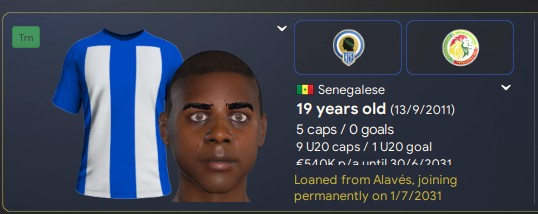
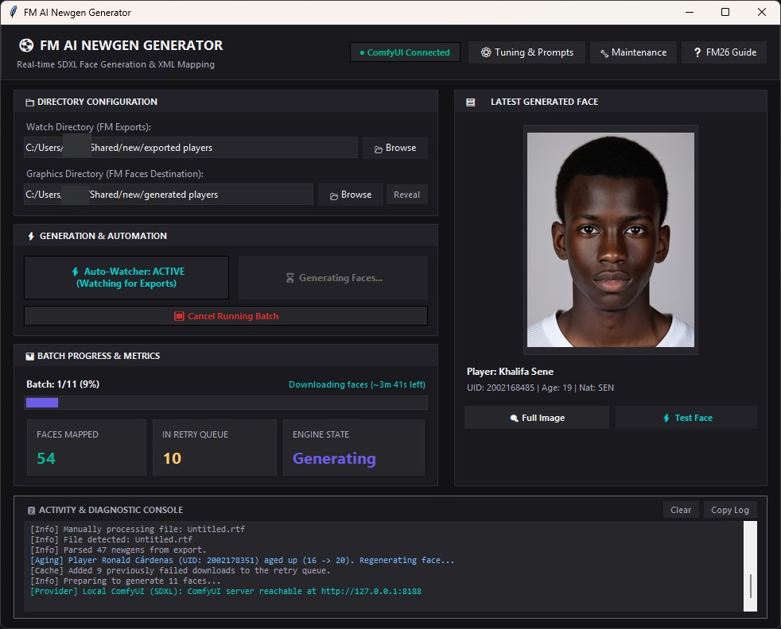

Automatically generate photorealistic, unlimited portraits for your newgen players — or any player without a face — directly in your FM save.
Free · Offline · Unlimited — runs locally on your own GPU
Windows 10 / 11 · See System Requirements below for GPU spec
Every face is generated locally on your GPU, then mapped straight into your Football Manager save via config.xml.

Players without a face show blank default silhouette portraits in FM.
A photorealistic face, aged by milestone, seamlessly bound to the UID.

site/img/app-ui.jpg to display here.Six powerful features built for realism, immersion, and seamless save integration.
Photorealistic headshots on a clean media-day studio background — no distorted crests, no pitch background, no waxy AI look.
Point the app at your exports once. New youth intakes are detected and facepacks are generated automatically in the background.
Preserves exact facial bone structure while updating hair, facial stubble, and maturity markers across ages 16, 20, 24, and 28.
Reads classic Ctrl+P text exports on FM24 and seamlessly ingests CSV/HTML from the free FM26 Player Export plugin.
Raw prompt tuning modal lets you customize positive/negative prompts, SDXL sampling steps, CFG scale, and model checkpoints.
Runs entirely on your local NVIDIA GPU using bundled ComfyUI. Zero API keys, zero cloud fees, and completely offline.
Steps tagged Auto are handled by the app. Manual steps take less than a minute in Football Manager.
config.xml.Install the free FM26 Player Export plugin (BepInEx) by vinteset. In FM26, make sure the ID column is visible in your view, press F9, and the generator parses its CSV/HTML output automatically.
Download the filter, place it in your FM filters folder, and select it in Player Search.
Documents\Sports Interactive\Football Manager 2024\filters\
Generation runs locally on your machine. An NVIDIA GPU delivers fast rendering speeds.
| Component | Requirement |
|---|---|
| Operating System | Windows 10 / 11 (64-bit) |
| GPU | NVIDIA GPU — 4 GB VRAM min · 6–8 GB recommended (≈5–15s per portrait) |
| System Memory | 8 GB RAM minimum · 16 GB RAM recommended |
| Storage | ~25 GB free disk space (engine ~2 GB + RealVisXL model ~7 GB, one-time) |
| Compatibility | FM24 (built-in export) · FM26 (requires free export plugin) |
A complete step-by-step guide from download to seeing faces in your squad.
Download FMNewgenGenerator.exe and run it. The setup wizard downloads the AI engine and RealVisXL model with a live progress bar, installing everything into %LOCALAPPDATA%\FM Newgen Generator\. When the app opens, wait for the status badge to turn green (● ComfyUI Connected).
Open Preferences → Interface, untick “Use caching to decrease page loading times”, tick “Reload skin when confirming changes”, then click Clear Cache and Reload Skin. This ensures FM reads generated face images immediately from disk.
FM24: Download the filter, place in filters/, open Player Search, apply the filter, press Ctrl+A, then Ctrl+P → To text file into your configured Watch Directory.
FM26: Install the free export plugin, ensure the ID column is visible, press F9. Point the Watch Directory at the plugin's output folder.
Click Auto-Watcher: ON (or Generate Batch) in the app. Watch the live portrait preview and progress bar. Once finished, reload your skin in FM to see the new realistic faces on your players!
Common questions about models, game compatibility, and performance.
Yes. Because FM26 removed the native text export, the generator reads CSV/HTML from the free FM26 Player Export plugin (BepInEx). Keep the ID column visible, press F9, and everything is handled automatically.
This is expected for unsigned third-party game DLLs. Right-click the file → Properties → Unblock, and add the BepInEx\plugins\FM26PlayerExport folder to antivirus exceptions if needed.
The app auto-starts the local server on boot. If it does not connect within a minute, click ● Checking / Test Connection in the top header, or open 🔧 Maintenance → Repair Install to verify model files.
No. The generator is 100% free and open-source. All generation runs offline on your GPU with zero cloud dependencies.
No. Newgen faces are saved into their own dedicated directory (graphics/AI Newgen Faces/) with an isolated config.xml, leaving existing real player packs completely untouched.
Free forever · 100% offline · Generated locally on your GPU